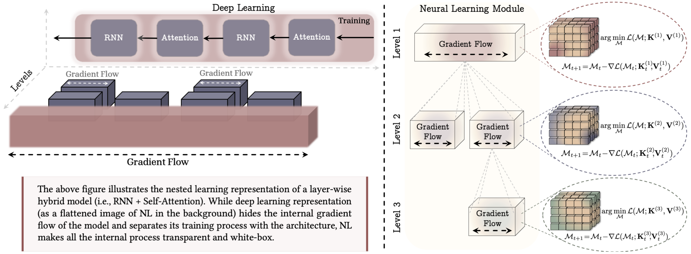

Introduction#
The evolution of design philosophy in deep learning reflects a significant intellectual shift—from viewing model architecture and optimization as modular, separable components to recognizing them as intrinsically coupled elements of a unified learning system. In the early paradigm, architectural design pursued representational efficacy through inductive biases—such as translational equivariance in convolutional networks (ConvNets)—while optimization research developed generic algorithms like Stochastic Gradient Descent (SGD) and its momentum-augmented variant (SGDM) to navigate parameter spaces independently of structural specifics. This decoupled perspective treats optimizer selection primarily as an overall posterior optimization problem following architecture design.
Large-scale empirical evidence has systematically dismantled this modular perspective. A paradigmatic example is the now-standard coupling of the Transformer architecture with adaptive optimizers—predominantly Adam or AdamW—rather than with classical SGD(M). This pairing is not incidental but arises from a fundamental architectural–optimizer duality: the Transformer’s forward pass exhibits pronounced heterogeneity, with self‑attention creating dense, dynamic interactions across tokens, while feed‑forward and normalization layers operate at distinct parameter and gradient scales. This intrinsically heterogeneous gradient geometry is ill‑suited to the uniform, coordinate‑wise updates of SGD(M), often leading to instability or poor convergence. In contrast, AdamW’s per‑parameter adaptive learning rates and momentum dynamically compensate for this heterogeneity, enabling stable and efficient optimization. This observed synergy reflects what we formalize as the Backbone–Optimizer Coupling Bias (BOCB): the inductive bias embedded in the architecture actively shapes the dynamical landscape that the optimizer must navigate, while the optimizer’s update rule in turn reshapes the effective geometry of the architecture’s parameter manifold.
The Nested Learning (NL) framework elevates this empirical insight into a principled theoretical account. NL interprets both architectures and optimizers as instances of nested associative‑memory systems, each compressing a specific context flow—tokens for the forward pass, gradients for the update rule. Critically, these systems operate in a closed loop: the architecture generates the gradient statistics that form the input context for the optimizer’s associative memory, while the optimizer’s output reconfigures the architecture’s parameters, thereby shaping subsequent gradient flows. Hence, the coupling between a heterogeneous architecture like the Transformer and an adaptive optimizer like AdamW reflects a deeper computational necessity: the optimizer’s dynamics must be explicitly aligned with the statistical and geometric properties induced by the architectural backbone. Within the NL view, the conventional “architecture‑first, optimizer‑later” design paradigm is fundamentally incomplete; instead, the inductive bias of the architecture and the dynamical bias of the optimizer constitute two co‑designed facets of a single, nested learning mechanism. Recognizing this coupling not only explains prevalent empirical pairings but also opens a systematic pathway toward co‑designing more effective, robust, and efficient neural learning systems.
The Nested Learning Framework#
The Nested Learning (NL) framework elevates this empirical insight into a principled theoretical account. NL interprets both architectures and optimizers as instances of nested associative‑memory systems, each compressing a specific context flow—tokens for the forward pass, gradients for the update rule. Critically, these systems operate in a closed loop: the architecture generates the gradient statistics that form the input context for the optimizer's associative memory, while the optimizer's output reconfigures the architecture's parameters, thereby shaping subsequent gradient flows.

Within the Nested Learning (NL) framework, the conventional separation between architecture and optimizer is not merely relaxed but fundamentally dissolved. Both are recast as instances of nested, context-compressing associative memories operating at different temporal frequencies and on different data streams. This reconceptualization precisely defines the core architecture-optimizer problem: the need for dynamical alignment between the gradient distribution generated by an architectural inductive bias and the compression algorithm implemented by the optimizer's update rule. Failure to achieve this alignment results in inefficient credit assignment, unstable training dynamics, and suboptimal convergence, often misattributed solely to architecture depth or data quality.
Within the Nested Learning (NL) paradigm, neural learning modules are fundamentally inter-connected systems, where each component’s design profoundly influences the others. A key manifestation of this interdependence is that the architecture generates the dynamic context for optimizers—namely, the distribution and temporal structure of gradients—which the optimizer, itself a learning module or associative memory, must effectively compress and utilize. Consequently, different architectures induce distinct gradient patterns, implying that a single optimizer cannot optimally serve all model designs. This insight underscores the necessity of moving beyond generic optimization schemes toward architecture-specific optimizers, whose memory mechanisms, update rules, and preconditioning strategies are co-designed with the architectural backbone. Such harmonization ensures that the optimizer’s capacity to manage gradient information aligns with the architecture’s representational dynamics, enabling the entire neural learning module to operate as a cohesive, adaptive system—especially critical in continual learning scenarios where gradient landscapes evolve non-stationarily.
Guided by this principle, NL inspires targeted improvements on both fronts.
For architectures, the focus expands from static representational bias to optimization-aware forward dynamics. Key innovations include:
- Continuum Memory System (CMS): Replacing static MLP blocks with a cascade of feedforward networks updated at different frequencies. This creates an internal memory spectrum where high-frequency blocks adapt quickly to local context while low-frequency blocks retain persistent knowledge. This design directly mitigates catastrophic forgetting by allowing knowledge to be "recycled" across timescales through gradient flow, and it interfaces naturally with optimizers like M³.
- Self-Referential Titans and the Hope Architecture: This represents the most profound integration. Here, not only the main memory but also the projection matrices (for keys, values) and even meta-parameters like the learning rate and retention gate are implemented as fast-weight associative memories that are updated in-context using rules like DGD. The model essentially learns to modify its own architecture on the fly. The resulting Hope module combines these self-modifying Titans with a CMS backend, creating a neural learning module where architectural adaptation and gradient-based optimization are seamlessly unified across nested loops.
For optimizers, the goal shifts from generic efficiency to architecture-aware compression. This leads to novel designs such as:
- Delta Gradient Descent (DGD) and Delta Momentum: Moving beyond the dot-product objective of standard GD, these rules employ an L2-regression loss within the associative memory update. This incorporates a data-dependent weight decay, allowing the optimizer to better handle correlated token sequences and manage its own memory capacity, akin to how advanced recurrent models like DeltaNet operate on tokens.
- Generalized and Deep Momentum: Replacing the simple moving average in momentum with a more expressive memory module, such as a shallow MLP, enhances its capacity to model complex long-term dependencies in the gradient history, which is crucial for continual learning.
- Multi-scale Momentum Muon (M³): This optimizer explicitly instantiates the NL principle of multi-frequency memory. It employs a continuum memory system (CMS) for gradients, combining a fast-updating momentum term with a slow-updating one that aggregates gradients over longer chunks. Coupled with orthogonalization (via Newton-Schulz iterations), M³ is designed to capture both immediate and long-range gradient structures, improving performance in tasks requiring long-context credit assignment.
The Primal-Dual Geometry of Neural Network Optimization#
The conventional view in deep learning treats model architecture and optimization as distinct concerns: the architecture defines a parametric function \( f(\theta; x) \), and the optimizer serves as an external algorithm that navigates the resulting loss landscape \( \mathcal{L}(\theta) \). This decoupled perspective, while pragmatically useful, obscures a deeper and more fundamental mathematical structure. We argue that the forward pass of an architecture inherently defines a geometry on weight space, and the optimizer's update rule is—whether explicitly or implicitly—a computational procedure operating within the dual of this geometry. Recognizing this intrinsic duality reframes the design of learning systems from an empirical art into a theory-guided discipline of primal-dual co-design.
1. The Type Mismatch and the Imperative for a Duality Map
The canonical gradient descent update, \( \theta_{t+1} = \theta_t - \eta \nabla_\theta \mathcal{L} \), commits a subtle but significant conceptual error. The parameter vector \( \theta \) resides in a primal vector space \( \Theta \). The gradient \( g = \nabla_\theta \mathcal{L} \), however, is inherently a linear functional: it maps a weight perturbation \( \Delta\theta \in \Theta \) to a scalar change in loss via the linear form \( g^\top \Delta\theta \). Thus, \( g \) properly belongs to the dual space \( \Theta^* \). Subtracting an object from the dual space directly from one in the primal space is a type mismatch—it is an ill-defined operation absent a structure that identifies the dual space with the primal one.
A geometrically consistent update must therefore take the form shown in Equation (1), where \( \mathfrak{D}: \Theta^* \rightarrow \Theta \) is a duality map. The choice of this map is not arbitrary; it must encode the anisotropic sensitivity of the network's output to parameter perturbations. In other words, \( \mathfrak{D} \) should be derived from the geometry induced by the architecture itself, transforming the raw gradient into a descent direction that respects the intrinsic curvature of the loss landscape defined by \( f_\theta \).
2. The Architecture as a Generator of Primal Geometry
An architecture \( f_\theta \) is more than a mere function; it is a compositional structure that imposes a specific, non-Euclidean geometry on its parameter space. This geometry is naturally characterized by a norm derived from the operational semantics of its constituent layers. The framework of modular duality provides a systematic recipe for constructing this norm.
Each fundamental layer type is associated with a canonical operator norm determined by the spaces it connects. These layer-wise norms are not independent. Through formal composition (series connection) and concatenation (parallel connection) rules, they recursively define a global, heterogeneous norm \( \|\cdot\|_M \) on the entire parameter space \( \Theta \) of the compound network.
Each fundamental layer type is associated with a canonical operator norm determined by the spaces it connects:
- A Linear layer \( y = Wx \), designed to map normalized (RMS-scale) vectors to normalized vectors, is naturally assigned the RMS→RMS operator norm: \( \|W\|_{\text{RMS→RMS}} = \sqrt{d_{\text{in}}/d_{\text{out}}} \cdot \|W\|_2 \). This norm measures the maximum amplification of a typical (unit RMS-norm) input.
- An Embedding layer, which maps a discrete symbol (represented as a one-hot vector in \( \ell_1 \)) to a continuous embedding (in RMS geometry), is assigned the \( \ell_1 \)-→RMS norm: \( \|W\|_{\ell_1→\text{RMS}} = \max_j \|\text{col}_j(W)\|_{\text{RMS}} \).
- A Conv2D layer's geometry is captured by a spatial maximum over its kernel positions: \( \| \mathcal{W} \| = k^2 \max_{i,j} \| \mathcal{W}_{:,:,i,j} \|_{\text{RMS→RMS}} \).
Critically, these layer-wise norms are not independent. Through formal composition (series connection) and concatenation (parallel connection) rules—specifically, the weighted \( L_\infty \)-combination defined by the modular norm—they recursively define a global, heterogeneous norm \( \|\cdot\|_M \) on the entire parameter space \( \Theta \) of the compound network. This architecture-defined norm \( \|\cdot\|_M \) is the central object: it encapsulates the primal geometry. A perturbation \( \Delta\theta \) with small modular norm \( \|\Delta\theta\|_M \) guarantees a bounded change in the network's output, irrespective of its possibly large Euclidean magnitude. The architecture, therefore, implicitly defines a loss landscape whose local curvature is governed by this norm.
3. The Optimizer as an Approximate Dual Map
Given this geometry, the theoretically optimal steepest descent direction is not the raw gradient \( g \), but the result of applying the duality map \( \mathfrak{D}_M \) associated with the modular norm \( \|\cdot\|_M \) (Bernstein & Newhouse, 2024, Prop. 1). The core function of an optimizer is to approximate this ideal \( \mathfrak{D}_M \) operation with a computationally feasible procedure.
From this vantage point, common optimizers can be seen as implementing different fidelity approximations to the true duality map:
- SGD(M): Implements the duality map for the Euclidean norm (\( \mathfrak{D}_{\|\cdot\|_2}(g) = g / \|g\|_2 \)). This is geometrically correct only if the architecture's induced geometry \( \|\cdot\|_M \) is approximately isotropic and Euclidean—a condition that rarely holds for deep, heterogeneous networks.
- Adam/AdamW: Introduces per-parameter adaptive scaling, \( \hat{\eta}_t \propto (\sqrt{\text{EMA}(g_t^2)} + \epsilon)^{-1} \). This constitutes a diagonal, online approximation to the inverse curvature metric implied by \( \|\cdot\|_M \). Its success with Transformers stems from its ability to compensate—albeit coarsely—for the layer- and parameter-specific scaling inherent in the architecture's non-uniform geometry.
- Shampoo & K-FAC: Attempt higher-fidelity, block-diagonal approximations. For a matrix parameter \( W \), Shampoo's preconditioner \( (G G^\top + \epsilon I)^{-1/4} G (G^\top G + \epsilon I)^{-1/4} \) converges to the polar factor \( U V^\top \) of the gradient \( G = U\Sigma V^\top \). Strikingly, this is the core component of the exact duality map for an RMS→RMS-normed Linear layer: \( \mathfrak{D}_{\text{Linear}}(G) \propto \sqrt{d_{\text{out}}/d_{\text{in}}} \cdot U V^\top \). Thus, Shampoo can be interpreted as directly approximating the architecturally-prescribed dual map for matrix parameters.
- μP and Spectral Scaling: The principles of maximal update parametrization (Yang & Hu, 2021) are not arbitrary heuristics but derived consequences of this geometric duality. The prescribed scaling rules for initialization and learning rates (e.g., \( \eta \propto 1/\sqrt{d_{\text{in}}} \) for a Linear layer) emerge directly from the scaling factor \( \sqrt{d_{\text{out}}/d_{\text{in}}} \) present in
Linear.dualize. μP ensures that the optimization process remains aligned with the base geometry of the architecture across different width scales.
4. The Co-Design Imperative: Geometric Alignment as a First Principle
This geometric perspective provides a unifying framework that explains empirical practices and charts a course for systematic innovation. The observed efficacy of specific pairings (e.g., Transformer-AdamW, CNN-SGD) is not mere folklore but a direct consequence of geometric alignment. A pairing succeeds when the optimizer's implicit duality map provides a sufficiently accurate approximation to the one induced by the architecture's modular norm.
Consequently, the design problem is inherently and inescapably dual, forming a co-design loop:
- Architecture → Optimizer (Geometry Informs Dynamics): Designing a novel architectural component—be it a dynamic sparse layer, a structured state-space model, or a continuum memory system—requires reasoning about the modular norm it instantiates and the resulting gradient geometry. The optimizer must then be selected or engineered to implement an efficient approximation of the corresponding duality map \( \mathfrak{D}_M \). Failure to do so leads to misaligned dynamics, manifesting as instability, slow convergence, or poor generalization.
- Optimizer → Architecture (Dynamics Constrain Geometry): Conversely, the choice or development of an optimizer, which embodies a specific class of duality maps (e.g., diagonal adaptive, block-orthogonal), defines a "preferred" geometry. Architectures can be consciously designed to produce gradient flows that are well-structured for that optimizer's approximation capabilities, enhancing efficiency and stability. For instance, an optimizer like Shampoo, which approximates semi-orthogonal updates, pairs naturally with layers whose ideal geometry is close to RMS→RMS.
The frontier of this research lies in moving from heuristic approximations to principled, efficient computation of the duality map. Advances such as the rectangular Newton-Schulz iteration for the polar factor (Bernstein & Newhouse, 2024) exemplify this direction, providing stable, GPU-friendly methods to compute key components of the exact dual step. The ultimate goal is a tight integration where the specification of an architecture automatically informs the computational graph of its geometrically-consistent optimizer.
Backbone-Optimizer Coupling Bias (BOCB)#
The Backbone-Optimizer Coupling Bias (BOCB) is the intrinsic and irreducible interdependence between the primal geometry induced by an architectural backbone's compositional structure and the dual dynamics implemented by its optimizer's update rule. This interdependence is not merely a practical consideration but a foundational constraint arising from the very nature of gradient-based learning in structured parametric systems.
Muon & M³: Architecturally-Coupled Optimizers for Hidden Layers — Monolithic vs. Multi-Scale Memory Biases
- Initialize \( B_0 \leftarrow 0 \)
- for \( t = 1, \ldots \) do
Compute gradient \( G_t \leftarrow \nabla_\theta L_t(\theta_{t-1}) \)
-
\( B_t \leftarrow \mu B_{t-1} + G_t \)
\( O_t \leftarrow \text{NewtonSchulz5}(B_t) \) -
Update parameters \( \theta_t \leftarrow \theta_{t-1} - \eta O_t \)
- end for
- return \( \theta_t \)
Based on the theoretical framework presented in "Deriving Muon," the core insight behind the Muon algorithms lies in their explicit operationalization of gradient space orthogonalization as a geometric preconditioning strategy. This approach fundamentally reinterprets the optimizer's role from a simple gradient follower to an active geometric aligner. By applying iterative Newton-Schulz orthogonalization to momentum-accumulated gradients, Muon effectively projects raw gradient signals onto directions that respect the intrinsic geometry induced by the architectural backbone. This process implements a computationally efficient approximation to the exact duality map \( \mathfrak{D}_M \) prescribed by the network's modular norm, transforming the optimizer into a dynamic compensator for architectural heterogeneity.
The advanced Multi-scale Momentum Muon (M³) variant extends this principle across temporal hierarchies, maintaining separate momentum buffers that operate at distinct timescales. This creates a nested memory system where fast-momentum tracks immediate gradient flow while slow-momentum aggregates longer-term statistical structure, enabling the optimizer to simultaneously adapt to both local curvature and global trajectory geometry. Crucially, this design mirrors the nested associative memory structure of modern architectures like continuum memory systems, establishing a coherent dynamical coupling where the optimizer's compression of gradient history aligns with the architecture's compression of token context across complementary timescales.
This geometric perspective reframes optimization as a primal-dual alignment problem, where the optimizer's update rule must approximate the architecturally-prescribed duality map that transforms gradient covectors into weight vector updates consistent with the network's induced geometry.
From Recognition to Principle: Formalizing Co-Design for Coupled Dynamical Systems#
Guided by the BOCB principle and the Nested Learning framework, we can derive formal, actionable principles for co-design. This moves beyond the ad-hoc pairing of existing components and toward the systematic engineering of unified learning organisms where architectural and optimization dynamics are jointly specified.
The foremost principle is to explicitly align the primal geometry of the architecture with the implicit dual geometry of the optimizer. This alignment can be pursued in two complementary directions:
Top-Down (Architecture-First): Given a novel architectural component (e.g., a continuum memory block or a structured state-space layer), formally characterize the modular norm it induces. This norm dictates the ideal duality map, \( \mathfrak{D}_M \), for steepest descent. The optimizer must then be designed to approximate this map efficiently. For example, a layer designed to operate in RMS-to-RMS geometry naturally calls for an optimizer like Shampoo that approximates semi-orthogonal (polar factor) updates, rather than Adam's diagonal scaling. Muon, with its multi-scale momentum approach, provides another layer of sophistication, adding the ability to handle both fast and slow gradient updates, optimizing different components of the architecture in sync.
Bottom-Up (Optimizer-First): Given a computationally favored class of duality map approximations (e.g., diagonal adaptivity, block-diagonal K-FAC), one can design architectural families whose induced geometry is well-approximated by that class. This explains the historical success of simple feedforward networks with SGD: their near-Euclidean geometry is perfectly matched by SGD's identity duality map. Modern co-design might, for instance, create "Adam-optimal" layers whose gradient statistics are naturally whitened and decorrelated, minimizing the information loss from Adam's diagonal approximation. Muon rectifies backbone-optimizer coupling bias by orthogonalizing hidden-layer gradients via Newton-Schulz iterations, projecting updates onto the Stiefel manifold to preserve orthonormality.
The BOCB framework reveals why maintaining optimizer consistency across different training phases—from pre-training to fine-tuning and beyond into continual learning—is often crucial for preserving learned geometric structure. Each training phase induces a specific gradient flow regime that is intrinsically coupled with the architectural geometry. The optimizer, through its implicit duality map, imprints a particular geometric signature onto the weight space, creating a coherent representation-geometry pairing that should be preserved throughout the model's lifecycle.
Pre-training to Fine-tuning Continuity: Large-scale pre-training establishes a geometric embedding of knowledge within the weight space, shaped by the optimizer's specific duality map. When fine-tuning, using the same optimizer family (e.g., maintaining AdamW throughout) preserves the geometric relationship between the pre-trained representation space and the gradient descent dynamics. Switching optimizers between phases can disrupt this delicate coupling, leading to suboptimal convergence—an empirical observation that holds even when learning rates are carefully tuned.
Adaptive Strategy Modulation within Consistent Geometry: While optimizer identity should remain consistent, hyperparameter strategies can and should adapt to phase-specific requirements. For instance, an optimizer like Muon might employ aggressive fast-momentum during pre-training for rapid exploration, then shift to stronger slow-momentum during fine-tuning for stable refinement of pre-trained representations. Similarly, learning rates can be adjusted, but the core geometric alignment mechanism—the optimizer's approximation of the architecture's duality map—should remain unchanged. This preserves geometric continuity while accommodating phase-specific dynamics.
Continual Learning and Catastrophic Forgetting Mitigation: In continual learning scenarios, BOCB provides a geometric explanation for catastrophic forgetting: when new task gradients conflict with the geometric structure established by previous training, optimizer updates can overwrite essential knowledge. Optimizers with explicit memory separation (like Muon's multi-scale momentum) can maintain distinct geometric signatures for different tasks or temporal scales, enabling better knowledge retention through phase-consistent geometric preservation. The consistent application of the same geometric transformation (the optimizer's duality map) across tasks helps maintain a coherent representational manifold.
Conclusion#
In conclusion, the concept of Backbone-Optimizer Coupling Bias (BOCB) fundamentally challenges the prevailing decoupled view of architecture and optimization in deep learning. It asserts that the interdependence between a model's architecture and its optimizer is not merely a byproduct of practical design choices but a core constraint inherent to the nature of gradient-based learning in structured systems. By recognizing that each architecture induces a unique non-Euclidean geometry in weight space and that optimizers must approximate this geometry to navigate the solution space effectively, BOCB provides a new lens through which we must rethink both model and optimizer design. This rethinking leads to the need for co-design principles that treat the architecture and optimizer as a coupled dynamical system, each shaping and reshaping the other across nested timescales. By formalizing this relationship, we can develop more efficient and stable learning systems, such as those enabled by Muon, which leverages multi-scale memory, adaptive momentum, and geometric awareness to synchronize the architecture and optimizer. Ultimately, BOCB offers a pathway towards more sophisticated, harmonious systems that transcend the modular approach, where architecture and optimizer are not simply paired components but a unified, co-evolving system, reflecting a deeper understanding of the inherent biases and dynamics that govern neural network training.
To cite this blog post, you can use the following BibTeX entry:
@misc{tian2025bocb,
author = {Tian, Juanxi and Gu, Yufei},
title = {Backbone-Optimizer Coupling Bias: The Hidden Co-Design Principle},
url = {https://tianshijing.github.io/ScalingOpt/blogs/ScalingOpt/bocb.html},
year = {2025},
}
- Bernstein, J. (2025). Deriving Muon. [Link]
- Jordan, K., Jin, Y., Boza, V., You, J., Cesista, F., Newhouse, L., & Bernstein, J. (2024). Muon: An optimizer for hidden layers in neural networks. [Link]
- Bernstein, J., & Newhouse, K. (2024). Modular duality in deep learning. arXiv preprint arXiv:2410.21265. [arXiv]
- Li, S., Tian, J., Wang, Z., Zhang, L., Liu, Z., Jin, W., Liu, Y., Sun, B., & Li, S. Z. (2024). Unveiling the Backbone-Optimizer Coupling Bias in Visual Representation Learning. arXiv preprint arXiv:2410.06373. [arXiv]
- Bernstein, J., & Newhouse, K. (2024). Modular Duality and the Geometry of Neural Network Optimization.
- Large, M., et al. (2024). Nested Learning: Architectures and Optimizers as Associative Memory Systems.
- Yang, G., & Hu, E. J. (2021). Tensor Programs V: Tuning Large Neural Networks via Zero-Shot Hyperparameter Transfer.